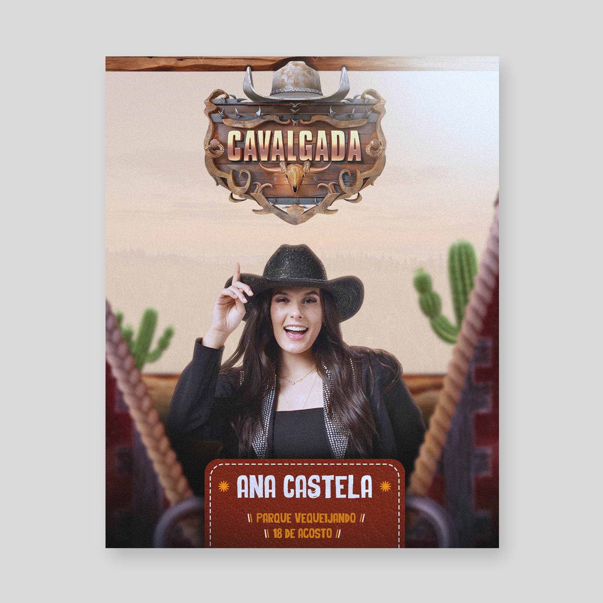

Flyer para Show com Gusttavo Lima, Leonardo e Gustavo Mioto – Divulgação Profissional de Evento
A divulgação de shows sertanejos exige artes impactantes e bem organizadas para chamar atenção do público. Eventos com grandes nomes da música, como Gusttavo Lima, Leonardo e Gustavo Mioto, precisam de um flyer profissional que destaque as atrações e transmita a importância do evento.

Como designer gráfico, desenvolvo flyers personalizados para shows, festas e eventos musicais. O objetivo é criar uma arte que gere impacto visual, destaque as informações principais e aumente o interesse do público em participar.
Design Profissional para Eventos Sertanejos
Shows sertanejos são muito populares e exigem uma identidade visual forte. O flyer precisa transmitir emoção, destaque para os artistas e organização das informações como data, local e horário.
Utilizo elementos visuais como iluminação, contraste, tipografia moderna e composição estratégica para valorizar o evento e destacar os artistas principais.
Arte para Divulgação nas Redes Sociais
Grande parte da divulgação de eventos acontece nas redes sociais. Por isso, o flyer é desenvolvido em formatos ideais para Instagram, Facebook e WhatsApp.
Uma arte bem estruturada permite que o público identifique rapidamente as atrações do show, aumentando o engajamento e o alcance da divulgação.
Flyer para Shows com Múltiplas Atrações
Eventos com mais de um artista precisam de organização visual para que todos tenham destaque. O flyer pode apresentar Gusttavo Lima, Leonardo e Gustavo Mioto de forma equilibrada, com hierarquia visual clara.
Isso garante que o público entenda rapidamente quem irá se apresentar e se sinta mais atraído pelo evento.
Material para Divulgação Digital e Impressa
O flyer pode ser utilizado tanto em formato digital quanto impresso. A versão digital é ideal para redes sociais e WhatsApp, enquanto a versão impressa pode ser distribuída em pontos estratégicos para divulgação local.
Um design profissional aumenta a credibilidade do evento e melhora a percepção do público sobre a organização.
Como funciona o processo de criação
1. Envio das informações
Você envia os dados do evento, como nome dos artistas, data, horário, local, valores e outras informações importantes.
2. Planejamento visual
Organizo as informações de forma estratégica para garantir clareza e destaque para os artistas principais.
3. Criação do flyer
Desenvolvo uma arte personalizada com estilo moderno, valorizando os artistas e criando um visual atrativo para o público.
4. Ajustes e entrega final
Após aprovação, realizo ajustes necessários e entrego o material pronto para divulgação.
Perguntas Frequentes (FAQ)
Você cria flyers personalizados para shows?
Sim. Cada flyer é desenvolvido de acordo com o estilo do evento e os artistas envolvidos.
O flyer pode ser usado no Instagram?
Sim. O design é criado no formato ideal para redes sociais como Instagram, Facebook e WhatsApp.
É possível destacar vários artistas na mesma arte?
Sim. O layout é organizado para destacar todos os artistas de forma equilibrada e profissional.
O que preciso enviar para iniciar o projeto?
Envie nome dos artistas, data, local, horário, valores e qualquer informação importante para o flyer.
Qual é o horário de atendimento?
Atendo de segunda a sábado com suporte até às 22h. Esse horário facilita o contato de produtores e organizadores de eventos que trabalham no período da noite.
O design ajuda na divulgação do evento?
Sim. Um flyer profissional chama mais atenção, aumenta o alcance nas redes sociais e pode influenciar diretamente na decisão do público de participar do evento.
Solicite seu Flyer para Show
Se você deseja divulgar um evento com Gusttavo Lima, Leonardo e Gustavo Mioto com uma arte profissional e impactante, entre em contato agora mesmo e solicite um orçamento personalizado.
Dê uma olhada também em mais artes minhas: Arte para lanchonete, Arte para churrascaria e Arte para Açaíteria